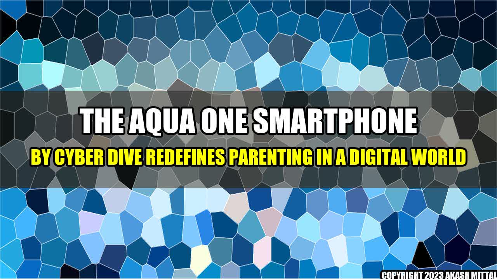

The Aqua One Smartphone by Cyber Dive Redefines Parenting in a Digital World
It's a typical weekday afternoon, and a mother is trying to get some work done from home. Her young son is beside her, begging for attention. She knows she should engage with him, but she has deadlines to meet. This scenario is common in today's digital world, where parents are struggling to balance work, technology, and quality time with their children.
Fortunately, there's a solution to this problem: the Aqua One smartphone by Cyber Dive. This innovative device is changing the way parents interact with their children, and it's making a big difference in the lives of families around the world.
What is the Aqua One Smartphone?
The Aqua One smartphone is a device designed specifically for children. It has all the features of a normal smartphone, including text messaging, calling, and internet access, but it also includes a number of features that make it safe and secure for children to use.
For example, the Aqua One has a special "Kid Mode" that restricts access to certain apps and websites. It also has a "Parent Mode" that allows parents to monitor their children's usage and set time restrictions.
In addition, the Aqua One comes with a number of games and educational apps that are appropriate for children of all ages. This makes it a great tool for learning and entertainment.
How is the Aqua One Redefining Parenting?
The Aqua One is more than just a device – it's a game-changer for parents. Here are some ways that the Aqua One is redefining parenting in a digital world:
- It's helping parents stay connected with their children. With the Aqua One, parents can communicate with their children throughout the day, even when they're not physically together. This helps them stay connected and engaged with their children, even when they're busy with work or other activities.
- It's promoting responsible technology use. The Aqua One is a safe and secure device that promotes responsible technology use among children. By giving children their own device, parents can teach them how to use technology in a responsible and appropriate way.
- It's giving children a sense of independence. The Aqua One allows children to feel independent and responsible, as they have their own device to use. This can help boost their confidence and self-esteem, and can also help them learn important skills like time management and communication.
What are Some Real-Life Examples of the Aqua One in Action?
Here are some real-life examples of how the Aqua One is making a difference in the lives of families:
- Case Study 1: Maria is a working mother who often feels guilty about not spending enough time with her children. Since getting the Aqua One for her 8-year-old daughter, Maria has been able to communicate with her throughout the day, sending pictures, messages, and videos. This has helped her feel more connected to her daughter, even when she's busy with work.
- Case Study 2: James is a single father who wants to teach his son responsible technology use. Since getting the Aqua One for his 11-year-old son, James has been able to monitor his son's usage and set time restrictions. He's also been able to use the device as a tool for learning, downloading educational apps and games.
- Case Study 3: Sarah is a mother of three who wants to encourage her children's independence. Since getting the Aqua One for her 6-year-old daughter, Sarah's daughter has been able to make calls and send messages independently. This has helped boost her daughter's confidence and sense of responsibility.
Conclusion
The Aqua One smartphone by Cyber Dive is changing the game for parents in a digital world. By promoting responsible technology use, keeping children connected, and giving them a sense of independence, the Aqua One is helping families navigate the challenges of modern parenting.
- The Aqua One is a safe and secure device that promotes responsible technology use among children.
- The Aqua One allows parents to stay connected with their children throughout the day, even when they're busy with work or other activities.
- The Aqua One gives children a sense of independence and responsibility, which can help boost their confidence and self-esteem.
Akash Mittal Tech Article
Share on Twitter Share on LinkedIn